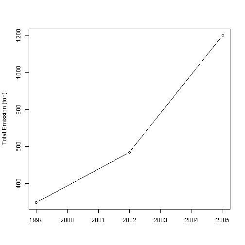

- Fine particulate matter (PM2.5) ambient air pollutant sample dataset from Environmental Protection Agency
- Being used in the Exploratory Data Analysis Course of Coursera
- Made some pre-processing to increase the speed of app
Cheng-Hsien Tang
5-page slides for the project
## fips Emissions type
## 1 9001 15.714 POINT
## 2 9001 234.178 POINT
## 3 9001 0.128 POINT
## 4 9001 2.036 POINT
## 5 9001 0.388 POINT
## 6 9001 1.490 POINT
